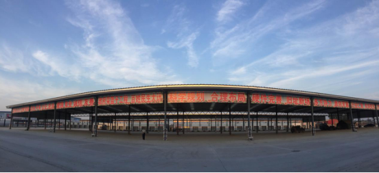
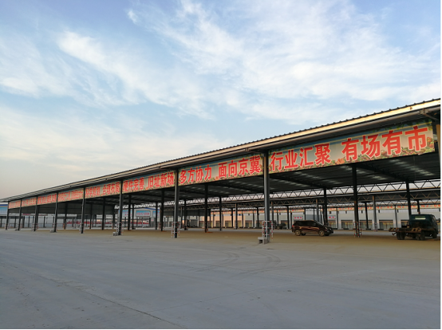
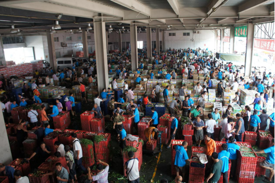
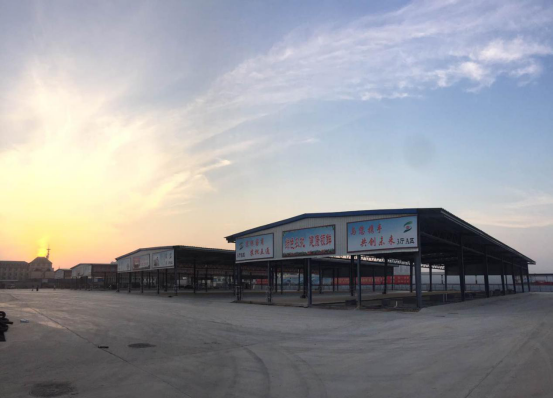
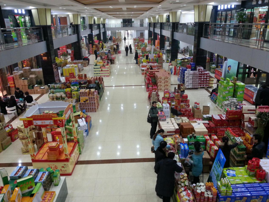
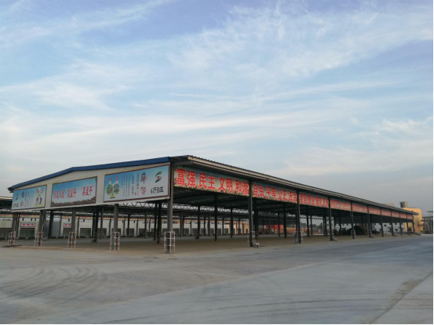

农批市场仍是未来王者，如何触网成为长寿关键
2017-10-10

近几年，由于互联网的迅猛发展，各种电商喷涌而至，农产品行业作为民生工程，吸引了众多知名电商的关注。而“生鲜电商”的发展是否会取代“农批市场”这个现代农产品主要交易平台呢？今天为您转载，行业资深大佬分析的未来农产品交易的发展方向。
1、农批市场是农产品交易的绝对主体
对于中国当前的农产品而言，市场规模非常之大，据商务部2013年公布的数据是四万亿级别的空间，如果加上相关的农资、物流及配套行业，总量超过十万亿以上。对于农产品交易的环节而言，目前超过80%的份额是通过农批市场来完成的，可以说农批市场是中国农产品交易的核心主体。

2、颠覆者正由先驱走向先烈
规模大也就意味着利益巨大，所以盯着农批市场这块蛋糕的朋友们也是很多，尤其是曾经在互联网攻城夺寨的那么多精英们更是勇猛，他们希望希望利用当前的互联网革命，利用全新的互联网思维，颠覆农批市场这个传统而落后的体系。于是我们可以看到，一群又一群的先驱者进在不断的涌入，一时间B2C、O2O、B2B在农业圈子里广泛传播，什么基地到终端，什么去掉中间环节，什么改变农批市场等层出不穷，一时间大家对农批市场的作用和地位也充满了怀疑，感觉农批市场很快就会被取代。可是几年的光景下来，虽然他们思维创新，资本也相当给力，遗憾的是，一大批的互联网+农业的精英们正慢慢由先驱变成先烈，即使现在未死，也处于无助的迷惘之中。

3、农批市场还是未来的王者
由先驱成为先烈，也许当中的原因非常非常之多，但是小编斗胆总结一下他们失败的主因，那就是他们太小看农批市场的传统与能量了，在当前环境下希望绕开农批市场或者用自己的模式来取代现在的农批市场都是不切实际的。在小编看来，农批市场的流通体系在中国存在了上千年的时间，虽然看起来不美，但是运转仍是最有效率、最符合市场规律的，简单通过一点点的思维创新就轻言取代，完全是天方夜谭。在此小编甚至可以断言，农批市场不仅是当前的农产品流通的主流，而且未来一段时期内仍旧是绝对的王者。

4、触网是农批市场发展的要素
虽然说农批市场的功能及作用一段时期内仍然难以取代，但是农批市场的创新与发展也必须与时俱进。现在是互联网的时代，每个行业都需要与互联网充分结合才能适应社会发展的大潮，否则总有一天也会被淘汰的，农批市场也是如此。所以作为农批市场的经营方，农批市场的商户们应该行动起来，勇敢的拥抱互联网，用互联网的技术和手段来提升自身的能力，只有这样农批市场才能更好的生存发展下去。

5、当前农批市场触网方式的梳理
现在也有不少农批市场也在“触网”，甚至有些已经走得相当之深，小编大致梳理一下，通常有以下几种模式：一是市场信息行情的发布，二是网上交易系统的建立，三是打造面向消费者的“农产品商城”，直接操作B2C。当然也许还有很多很多，但是小编发现这些操作鲜有成效，他们往往还是简单的把农批市场的功能往网上进行堆彻，浪费人力物力不说，甚至引发了更多的矛盾，得不偿失。

6、如何触网才是农批市场长寿的关键
触网是必须的，那么如何触网呢？小编在这里抛砖引玉，希望给大家进行思考，毕竟农批市场是当前基地与销售商最重要的前沿阵地，他的发展方向也是我们关注的。小编认为农批市场触网，首先要有清晰的定位。农批市场当前做的工作是服务，不是交易，所以即使触网了也要做服务，把服务做得更好；其次要选准切入点。从社会发展大势来看，未来农批市场只是一个物流及中转的功能，那么当前最核心的交易及支付功能一定会互联网化，所以农批市场需要从这方面下功夫。第三是要做有粘性的互联网产品。农批市场通过商户联接种植基地及采购商，做什么的互联网产品能够让中间商户、种植基地及采购商都感兴趣或都必不可少就显得十分关键。第四是搭建更广泛的服务平台。农批市场既然是一个服务商，那么就要搭建一个服务平台，同时不能只局限在当前的服务项目中，应该为自己的客户提供更广泛的服务，解决他们的问题，例如供求信息、农资农机、农业金融、物流配送等各个方面。小编认为如果农批市场能这样触网，就一定能够生存能越来越好，越来越长寿。